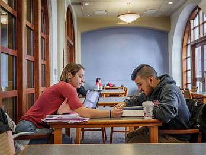

MSI Academic Support Resources
Academic Advising
At the University of Michigan School of Information (UMSI), we are committed to supporting our students' academic success by offering a wide array of resources and services. Our academic advising team provides personalized guidance to help you navigate your curriculum, select courses, and address any academic challenges or questions you may encounter during your studies.
Learn More About Academic AdvisingLibrary Resources
UMSI students have access to the extensive collections and study spaces within the University Library system, offering both digital and physical resources essential for research and coursework. The library provides access to databases, journals, and special collections that are invaluable for both academic and professional research.
Tutoring Services
Our specialized tutoring services are designed to help students master complex subjects and achieve their academic goals. Tutors are available for a wide range of courses and can provide one-on-one support or group study sessions to enhance your learning experience.
Discover Tutoring ServicesUMSI Writing Center
The UMSI Writing Center is dedicated to supporting students in enhancing their written communication skills. Whether you need help with research papers, project reports, or any other form of academic writing, our writing tutors are here to assist you.
Visit the Writing CenterCommunity Resources
Beyond UMSI, the University of Michigan offers numerous community resources that can support your academic and personal growth. Explore opportunities to engage with study groups, workshops, and seminars that help you connect with peers and expand your knowledge base.
Explore Community Resources